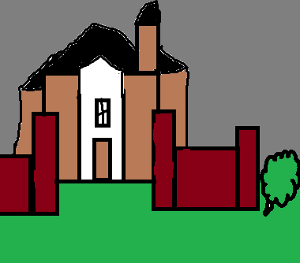

College Hall is haunted by a former student named Mildred Hedges. Mildred was a freshman home economics major, who caught her heel on the stairs fell to her death from the third floor. Students say they see her peering through the windows of College Hall.
